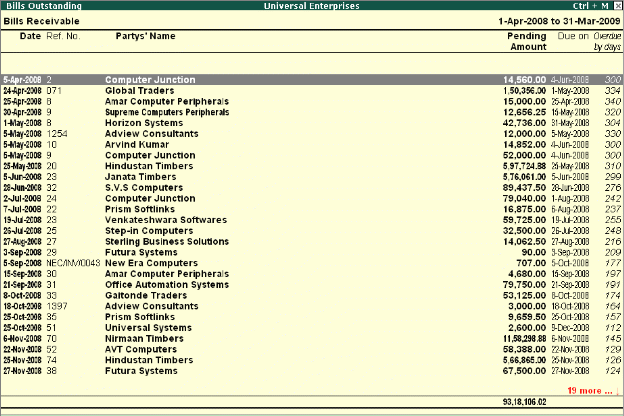
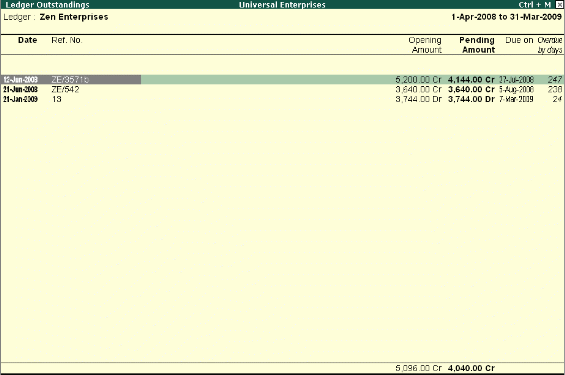

Receivables and Payables Management
Accounts Receivables are the amounts that you are to receive from the sundry debtors while Accounts Payables are the amounts you have to pay to sundry creditors. Tally.ERP 9 provides complete bill wise information of amounts receivable as well as payable, either on party wise, group wise or Bill wise. This feature tracks bills, payments/receipts including advances on one-to-one basis.
To view Outstandings:
# Set Maintain Bill-wise Details to Yes in F11: Accounting Features
# Create a Party (Ledger A/c) under Sundry Debtors / Sundry Creditors group
# Set Maintain balances bill by bill to Yes for the parties during ledger creation
# Go to Gateway of Tally > Accounting Vouchers > Sales (F8) or Purchase (F9) accordingly and enter the transaction by specifying a Bill reference No. along with due dates for the amount to be received or paid in the Bill Allocations for screen
To view Receivables / Payables Reports Go to Gateway of Tally > Display > Statement of Accounts > Outstandings > Receivables (to view due to the company). The report displays bill-by-bill outstanding for all the parties with the pending amount along with the due date.

To view individual Party wise outstanding,
# Select Ledger in the Outstanding menu,
You will get a report displaying bill-by-bill details of all outstandings for the concerned party along with the total outstanding amount. You can also view details of cleared bills, by using the options in the button bars.